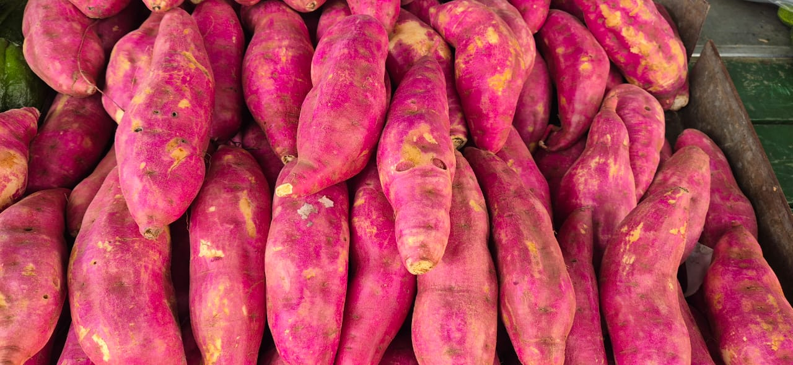

Sobre Nós
A COOPERATIVA DOS PRODUTORES E AGRICULTORES FAMILIARES DE BEBERIBE LTDA é uma organização dedicada a apoiar e promover os agricultores familiares da região de Beberibe, Ceará. Fundada em [ano de fundação], nossa cooperativa tem como missão fortalecer a agricultura local, promover práticas sustentáveis e melhorar a qualidade de vida dos nossos membros.
Produtos
- Frutas: Manga, caju, acerola, goiaba, entre outras frutas tropicais cultivadas por nossos agricultores familiares.
- Vegetais: Tomate, alface, couve, cenoura e outros vegetais frescos e orgânicos.
- Grãos: Feijão, milho e arroz produzidos com técnicas sustentáveis.
- Produtos Processados: Sucos naturais, geleias e conservas feitos com ingredientes frescos da região.

Cajuína Nordestina
Suco clarificado de caju, 100% natural e sem adição de açúcares.

Feijão de Corda
Grãos selecionados, colhidos diretamente pelos nossos produtores.

Cheiro-Verde Fresco
Maço de temperos frescos (coentro e cebolinha) cultivados organicamente.

Manga Palmer
Mangas suculentas e doces, cultivadas com cuidado por nossos agricultores familiares.

Tomate Orgânico
Tomates frescos e saborosos, cultivados sem o uso de pesticidas químicos.

Batata Doce
Batatas doces e saborosas, cultivadas sem o uso de pesticidas químicos.
Informações
A COOP-AFBE, uma cooperativa de agricultores familiares, tem como missão oferecer produtos de qualidade e promover a sustentabilidade. Nossos produtos são cultivados com práticas agrícolas responsáveis, garantindo frescor e sabor. Valorizamos a comunidade local, apoiando os agricultores e contribuindo para a economia regional. Junte-se a nós para desfrutar de alimentos frescos e apoiar a agricultura familiar de Beberibe.
Reuniões
Nossas reuniões acontecem mensalmente, sempre na última sexta-feira do mês, às 18h, na sede da cooperativa. Todos os membros são convidados a participar para discutir assuntos importantes, compartilhar ideias e fortalecer nossa comunidade agrícola. Sua presença é fundamental para o crescimento e sucesso da COOP-AFBE!
Eventos & Galeria
Contato
Entre em contato conosco para mais informações sobre nossos produtos e serviços:
- Telefone: (85) 1234-5678
- Email: contato@coopafbe.com.br